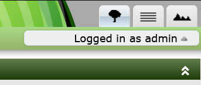
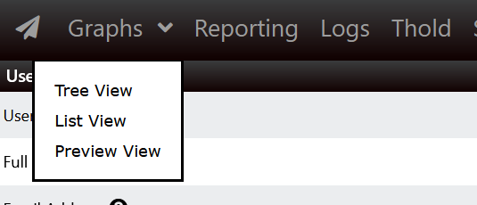
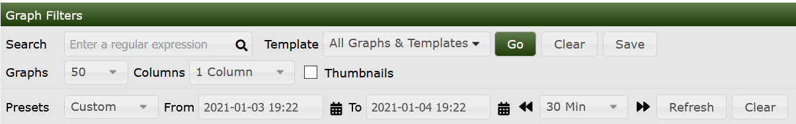
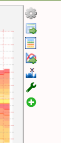
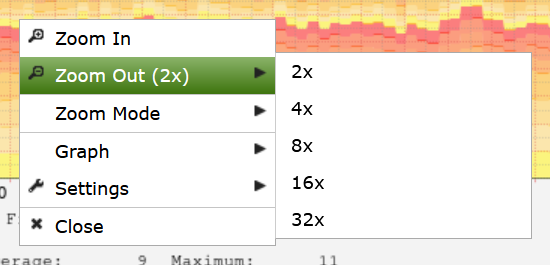

Cacti, when it was first invented in 2001 by Ian Berry, his vision was to make it the fastest and easiest way to view and render Network Monitoring Graphs for people in the Network, Site, and Data Center Operations Space. As such, it's focus from the very beginning was on render just one thing, Graphs. So, as such, the second Top Tab on a Cacti system is the Graphs tab.
The Graphs Top Tab has a few personalities. They include:
Tree View
Allows Cacti Users to view Graphs in the form of hierarchical Trees. These Trees are generally constructed by the Cacti Administrator and are controlled either at the User or User Group level.
Preview View
The Preview View provides a view of all Graphs that a Cacti User has access to. Table Filters are provided to constrain the list of Graphs returned to the page.
List View
The List View allows the Cacti user to Create their own Preview Page by allowing them to select graphs from various pages, and then finally view those pages from the Preview View.
The way these various personalities appear in Cacti is somewhat different depending on your Theme. Review the two images below, for how you navigate to the various Graph View modes.
In this first image, we see the way the Graph View options are displayed to the end user. This is the layout of the Classic, Modern and Dark themes.

In this second image, you can see the way the Graph View page will appear for users of the Paw, Paper-Plane, and Sunrise themes.

Once you can view the Graphs, there will be a Filter Panel that will provide you multiple options to limit your view of them. Below, you can see an image of that Filter Panel.

From this sub-panel, you can do the following:
Once you have the Filter where you like it from a Columns, Thumbnails, and Graphs per Page setting, you can press the Save button, if you have the correct permissions and save those defaults for your next login.
Depending again on permissions, to the right of the Graphs, you will find a number of action icons that allow you to operate on the Graphs
The image below shows what that might look like if you have the Thold and QuickTree Plugins installed.

From top to bottom, the Graph Action Icons do the following.
| Name | Description |
|---|---|
| Graph Details | Allow you to perform precision zooming, view RRDtool debug information and perform CSV exports of your Graph Data. |
| CSV Export | Allows you to directly CSV Export your Graph Data |
| Realtime View | Allows you to view your Graphs at down to a 1 second granularity either in place, or in a pop-up Window |
| Spike Kill | Allow you to clear up Spikes and Gaps in your Graph |
| Create Threshold | Create a Threshold for the Graph |
| Add to QuickTree | Allow you to select Graphs to add to Trees by simply tooling around the Graphs page. |
Cacti also has a powerful Graph Zoom interface built in. You can discover what it allows you to do by simply right clicking in the Graph area. When zooming, you will zoom all the Graphs on a page. It's quite powerful.

There are many options for the Zoom menu. Instead of explaining them here try them out for yourself.
Copyright (c) 2004-2024 The Cacti Group